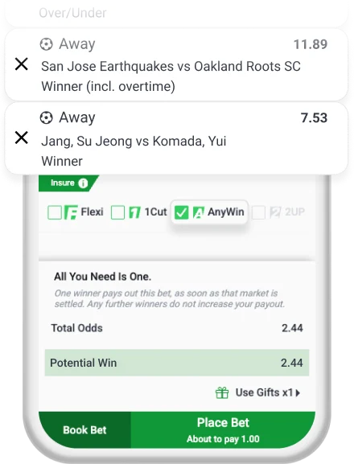

Unleash simplicity with SportyBet AnyWin—win big with one winning selection! Perfect for football fans, this feature ensures a win payout as soon as one market settles. Add underdog picks for higher payouts and excitement!
How to Use SportyBet AnyWin?
Step 1 : Activate AnyWin
Add at least 2+ selections from different events to your betslip and enable AnyWin. Include underdogs for bigger odds and thrilling wins!

Step 2 : Confirm Your Bet
One winning selection pays out your bet as soon as that market settles—no waiting for others! Additional winners won’t boost your payout, keeping it simple and exciting!
Terms and Conditions
1. AnyWin Bet is only available for Multiple Bets and only if 1 Multiple Bet is in your betslip.
2. AnyWin Bet is available for both Pre-Match and Live Betting.
3. AnyWin Bets can be Cashed Out.
4. A ticket is won only if one selection is correct out of all selections. For example, a customer chooses a total of 10 selections and the total odds are 5. This means that this customer will win this ticket if any of the selections is correct. However, odds will be fixed at 5, no matter if the customer wins more than one selection out of 10 selections.
5. In cases where there are voided selections, but the required number of winning selections is fullfiled, the full winnings will be credited. In cases where the required number of selections is not fullfilled, but it would have been fulfilled if voided selections had won, the payout will be re-calculated. In very rare cases, the re-calculated payout might be lower than the stake.
6. AnyWin Bets were created in order to reward our most valued customers. If fraudulent activity or abuse is suspected, we reserve the right to remove Gifts and associated winnings from a given account or any associated accounts.